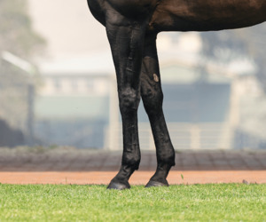
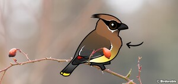
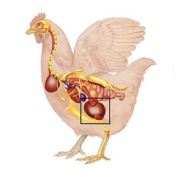
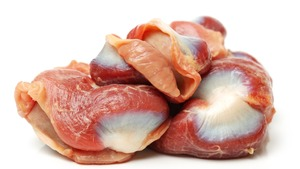

ϣⲱⲡϣ SB (rare), ⳉ. A, ϣⲱⲃϣ B nn m, arm, foreleg of animals: Lev 7 32 B (var -ⲡϣ, S ϭⲃⲟⲓ), Nu 6 19 S (var ϣⲱϫⲡ) B (var do), ib 18 18 S (var ϭⲃⲟⲓ) B, Deu 6 21 B (var ϫⲫⲟⲓ, S ϭ.), Is 53 1 A (Cl) B (S ϭ.), Hos 7 15 B (A ϭⲃⲁⲓ, S diff), Ac 13 17 B (S ϭ.) βραχίων; BodlOr 32 173 B stretch forth ⲡⲉϥϣ. & bless ذراع; as constellation name: Job 9 9 SB Ἀρκτοῦρος; P 44 52 S سعدان; Tri 484 S شعرى; P 12920 123 S ⲥⲟⲩⲛⲣⲟⲩϩⲉ, ϣ., ⲥⲟⲩⲛϩⲧⲟⲟⲩⲉ, Mor 41 152 S ⲥⲟⲩⲛϩⲧ., ϣ., ϭⲙϩⲟⲩⲧ; on identification v Brugsch Aegyptologie 343; JJHess (by letter) a polar constellation, cf Ora 4 400; shoulder: Job 31 22 B (S ⲛⲁϩⲃ), Ez 24 4 S (B ϫ.), Mal 2 3 S (ViK 920) B, Va 68 171 B linen stoles ϩⲓϫⲉⲛⲛⲓϣ. ὦμος; ShC 73 162 S arms bared ϣⲁϩⲟⲩⲛ ⲉⲛⲉⲧⲛϣ., EW 109 B ⲡⲉϥϣ. ϭⲟⲥⲓ above all soldiers, MG 25 63 B wings growing ϩⲓϫⲉⲛⲛⲟⲩϣ., TEuch 1 189 B cross ϩⲓϫⲉⲛⲡⲉⲕϣ. ساعدان (var ذراعان); crop, gizzard: Lev 1 16 S (B ⲗⲟⲃⲟⲥ) πρόλοβος حوصلة, Tri 484 S قانصة.
(noun masculine)
anatomy
arm, foreleg of animals [βραχιων]
as constellation name [Αρκτουρος]
shoulder [ωμος]
crop, gizzard
as constellation name [Αρκτουρος]
shoulder [ωμος]
crop, gizzard




1: arm, 2: forelog (of animals), 3: (as constellation name) Orion?, 4: shoulder, 5: crop, 6: gizzard
complete
554b
ϣⲱⲃϣ v ϣⲱⲡϣ.
582a
628b
ⳉⲱⲡϣ v ϣⲱⲡϣ.
See also:
| view | ϫⲛⲁϩ SALF ϫⲛϩ Sf ϫⲛⲁ A ϭⲛⲁϩ B ϫⲛⲉϩ, ϫⲉⲛϩ F plural: ϫⲛⲁⲩϩ S plural: ϭⲛⲁⲩϩ B | (noun masculine) forearm
strength, violence [βια]191 |
| view | ϭⲃⲟⲓ, ϭⲃⲟⲉ S ϭϥⲟⲉⲓ Sa ϭⲃⲁ(ⲉ)ⲓ AL ϫⲫⲟⲓ B ϭⲃⲁⲓ F | (noun masculine) arm of man, leg of beast [βραχιων, ωμος]2512 |
| view | ⲕⲗⲓϫⲓ B | (noun masculine) part of a bird2851 |
| view | ⲙⲁϩⲉ SA ⲙⲁϩⲓ BF ⲙⲉϩⲓ F | (noun masculine) ell, cubit (forearm) [πηχυς]
half-cubit lion's cubit, 7th lunar station1155 |
| view | ⲛⲟⲩϩⲃ SA ⲛⲟϩⲉⲃ, ⲛⲱϩⲉⲃ B ⲛⲁϩⲃ- S ⲛⲉϩⲡ- B ⲛⲁϩⲃ⸗, ⲛⲟϩⲃ⸗ S ⲛⲁϩⲃ† S | (verb) tr: make ready wagon by yoking beasts [ζευγνυναι]
yoke beasts intr: be yoked, harnessed457 |
| view | ⲙⲟⲩⲧ SB | (noun masculine) sinew, nerve [νευρον]
― joint neck [τραχηλος]288 |
| view | ⲁⲗⲟϭ S ⲁⲗⲟϫ B plural: ⲁⲗⲱϫ B | (noun masculine) thigh [μηρος]
knees pl [γονατα] arms pl [αγκαλαι] shoulders pl437 |
| view | ϭ(ⲉ)ⲗϩ, ϭⲗⲁϩ S | (noun masculine) shoulder2557 |